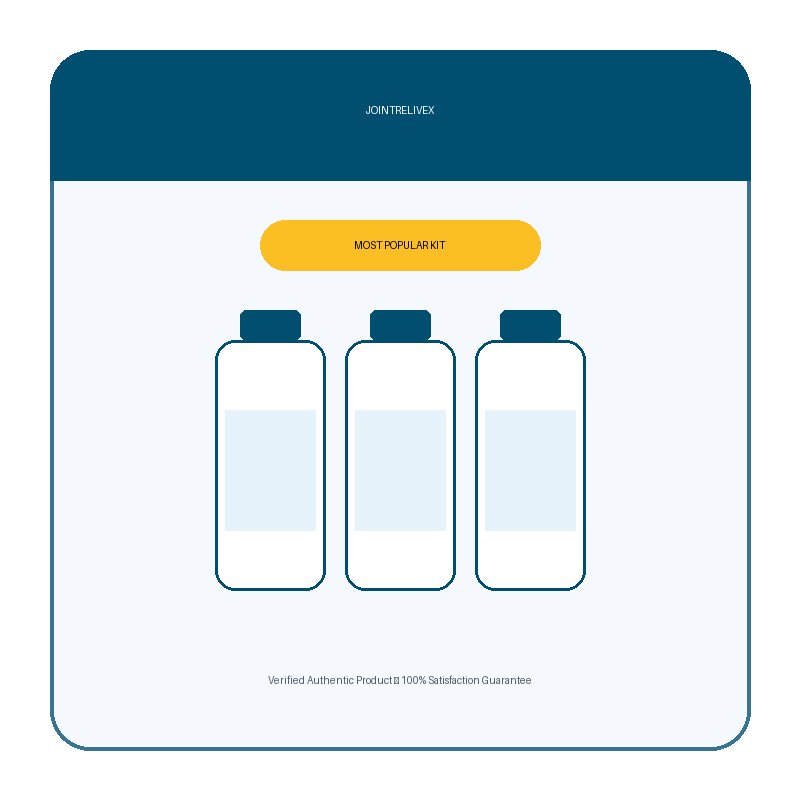

What Is JointReliveX And How Does It Work?
JointReliveX is an advanced joint support formula built around 8 clinically-studied ingredients. Each capsule delivers a precise combination of cartilage-rebuilding compounds, natural anti-inflammatories, and mobility-restoring nutrients designed to work together in three distinct stages.
The first stage targets the structural foundation. Glucosamine Sulfate at 1,000mg per serving — the most-researched dose in joint health literature — pairs with Chondroitin Sulfate to replenish the raw materials your cartilage needs to stay intact. Without these building blocks, the protective cushion between your bones gradually breaks down. That grinding sensation in your knees or hips? That’s cartilage thinning faster than your body can replace it.
The second stage addresses the inflammation cycle that keeps joints swollen and stiff. Boswellia Extract and Turmeric Root interrupt the specific enzymes responsible for chronic joint inflammation — the kind that turns a simple morning walk into something you dread. Quercetin and Bromelain reinforce this by neutralizing the oxidative stress that accelerates tissue damage.
The third stage focuses on long-term restoration. MSM supplies the organic sulfur your body requires to synthesize collagen and connective tissue, while Methionine supports proteoglycan production — the molecular scaffolding that gives healthy cartilage its shock-absorbing resilience. This three-stage approach is what separates JointReliveX from single-ingredient supplements that only address one piece of the puzzle.
JointReliveX is manufactured in an FDA-registered, GMP-certified facility in Aurora, Colorado. The capsules are 100% vegetarian, contain no stimulants, no GMO ingredients, and no artificial fillers.
JointReliveX Ingredients
Every ingredient in JointReliveX is dosed for real-world efficacy, not label decoration. Here is what each one brings to the formula and why it matters for your joints:
- Glucosamine Sulfate (1,000mg): The most extensively studied joint supplement compound. Glucosamine is a natural building block found in healthy cartilage. At the full 1,000mg clinical dose, it provides the raw material your body needs to rebuild the smooth cartilage cushion that prevents bone-on-bone contact in knees, hips, and hands.
- Boswellia Extract (133.3mg): Sourced from Boswellia serrata resin, this extract has been used for centuries to manage joint inflammation. Research confirms it inhibits the enzymes directly responsible for cartilage degradation, with clinical trials demonstrating measurable reductions in knee discomfort and morning stiffness.
- Chondroitin Sulfate (100mg): Works alongside Glucosamine to attract water into the cartilage matrix, keeping it supple, shock-absorbing, and resilient under daily stress. The Glucosamine-Chondroitin pairing is the most researched joint combination in clinical literature, with results typically felt within 4 to 8 weeks of consistent use.
- Turmeric Root (100mg): Contains curcumin, one of the most potent natural anti-inflammatory compounds identified by modern science. Multiple clinical trials show turmeric reduces joint swelling, discomfort, and morning stiffness in arthritis patients — often matching the effectiveness of common NSAIDs without the gastrointestinal side effects.
- Quercetin (16.7mg): A powerful flavonoid antioxidant derived from Sophora japonica. Quercetin neutralizes the free radicals that accelerate joint tissue breakdown and suppresses inflammatory cytokines — the molecules behind the chronic, low-grade inflammation that keeps arthritic joints perpetually inflamed.
- MSM (Methylsulfonylmethane) (16.7mg): Provides organic sulfur, an essential element for collagen and connective tissue production. Without adequate sulfur, your body cannot properly synthesize the proteins that give joints their strength and elasticity. MSM also has direct anti-inflammatory properties confirmed in multiple human trials.
- Bromelain (16.7mg): An enzyme extracted from pineapple stem with documented anti-inflammatory and analgesic properties. Bromelain reduces post-activity joint swelling and helps break down inflammatory proteins in the joint space — particularly valuable for people whose discomfort flares after physical activity.
- Methionine (16.7mg): An essential amino acid that serves as a precursor to sulfur-containing compounds critical for cartilage repair. Methionine supports proteoglycan synthesis — the molecules forming the matrix of healthy cartilage — and works synergistically with Glucosamine and Chondroitin to accelerate joint tissue restoration.
These 8 ingredients work as a coordinated system rather than isolated compounds. The rebuild-calm-restore sequence means each ingredient amplifies the effect of the others, which is why JointReliveX users often report improvements that single-ingredient supplements never delivered.
JointReliveX Side Effects
JointReliveX is formulated with well-studied, naturally-derived ingredients in a vegetarian capsule with no stimulants, no GMO content, and no artificial fillers. The formula is manufactured in an FDA-registered, GMP-certified facility in the United States.
Most users tolerate JointReliveX without issues. That said, some individuals may experience mild digestive discomfort during the first few days as their body adjusts, particularly if taken on an empty stomach. Taking the capsules with food or a full glass of water typically resolves this.
One important note: the Glucosamine in this formula is derived from crustacean shellfish (crayfish). If you have a confirmed shellfish allergy, JointReliveX is not appropriate for you. Additionally, Bromelain and Turmeric can have mild blood-thinning properties at higher doses — if you are currently taking blood thinners, diabetes medication, or NSAIDs, consult your physician before starting JointReliveX.
As with any dietary supplement, pregnant or nursing women and individuals with pre-existing medical conditions should speak with their healthcare provider before use.
JointReliveX Dosage
The recommended dose is two (2) vegetarian capsules daily, taken before a meal with a full glass of water. Consistency matters more than timing — the cartilage-supporting benefits of Glucosamine and Chondroitin build gradually over weeks of daily use, so setting a daily reminder is worth the effort.
Most users begin noticing reduced morning stiffness and improved comfort within the first 2 to 4 weeks. More significant improvements in flexibility, reduced swelling, and meaningful discomfort reduction during daily activities typically become noticeable between weeks 4 and 8.
Clinical protocols for Glucosamine and Chondroitin consistently indicate that 3 to 6 months of sustained use produces the strongest, most lasting results. This is why the manufacturer offers multi-bottle packages — the 90-day and 180-day supply kits give you enough for the full protocol at a lower per-bottle cost, with free shipping included.
Do not exceed the recommended dosage. If you experience any adverse reaction, discontinue use and consult your healthcare provider.
JointReliveX – Refund Policy
Every JointReliveX order is backed by a 60-day, no-questions-asked money-back guarantee. If you do not feel a meaningful difference in your joint comfort, flexibility, and daily mobility within 60 days of purchase — for any reason at all — you can request a full refund by email or phone.
There is no fine print. No hassle. No paperwork. And you are not required to return the bottles. You keep everything, and the company absorbs the risk entirely.
This guarantee applies to all package sizes, whether you order the 2-bottle starter or the 6-bottle full protocol kit. Processing is straightforward — contact their support team within 60 days of your purchase date, and the refund is issued promptly.
The 60-day window gives you enough time to experience the cumulative benefits of the formula, since the cartilage-rebuilding ingredients need several weeks of consistent use to deliver their full effect.
JointReliveX Customer Reviews
 Robert Harmon
Phoenix, AZ
Verified Purchase – 6 Bottles
Robert Harmon
Phoenix, AZ
Verified Purchase – 6 Bottles
"Seven years of knee trouble and I had basically given up on finding something that actually worked. Prescription meds, cortisone shots, physical therapy — nothing gave me lasting relief. My doctor mentioned Glucosamine years ago but the brand I tried back then did nothing. Started JointReliveX six weeks ago and last Saturday I walked a full 18 holes of golf for the first time since 2021. My knees still felt solid at the end. I ordered the 6-bottle kit because I’m not letting this feeling go."
 David Moretti
Chicago, IL
Verified Purchase – 3 Bottles
David Moretti
Chicago, IL
Verified Purchase – 3 Bottles
"I was skeptical about joint supplements — most of them felt like expensive placebos. But the Glucosamine dose in JointReliveX matched the clinical numbers I had researched, and the Boswellia was a bonus I did not expect at this price. Took it consistently for 45 days. The morning stiffness in my hands dropped significantly, and I can grip tools and open jars without the ache I used to fight through every single morning. My wife noticed the difference before I did."
 Dorothy Sullivan
Denver, CO
Verified Purchase – 3 Bottles
Dorothy Sullivan
Denver, CO
Verified Purchase – 3 Bottles
"My hip stiffness in the morning used to be so bad that getting out of bed felt like the hardest part of my day. My rheumatologist mentioned Glucosamine-Chondroitin combinations but I never found one that included Boswellia at a real dose. Three weeks into JointReliveX and the difference was unmistakable. I went from dreading mornings to actually looking forward to my walks again. My husband started taking it after seeing my results."
JointReliveX – Where To Buy
JointReliveX is available exclusively through the official website. It is not sold in retail stores, pharmacies, or through third-party marketplaces like Amazon, eBay, or Walmart.
This exclusivity exists for a reason. Joint supplements are among the most counterfeited product categories online. Unauthorized sellers on marketplaces have been documented selling expired, tampered, or outright fake versions of popular formulas — often in packaging that looks identical to the original. Purchasing from these sources means you have no way to verify authenticity, no access to the manufacturer’s 60-day guarantee, and no recourse if the product does not match what was advertised.
When you order directly from the official site, every bottle ships from the company’s Aurora, Colorado facility with full lot traceability. Your purchase is protected by the 60-day money-back guarantee, and multi-bottle kits (3 and 6 bottles) include free shipping within the United States.
There are no subscriptions, no auto-billing, and no hidden charges. You pay once, your order ships, and you are never charged again unless you choose to reorder.
To ensure you’re getting the authentic product, most users choose to visit the official website directly.
Is JointReliveX A Scam?
No. JointReliveX is a legitimate joint health supplement manufactured in an FDA-registered, GMP-certified facility in Aurora, Colorado. The formula contains 8 ingredients with documented research behind them, dosed at levels consistent with published clinical protocols — not the token amounts that cheaper supplements use to pad their labels.
The company operates through BuyGoods, a registered retailer based in Wilmington, Delaware, which handles secure payment processing and customer service. Every order is covered by a 60-day money-back guarantee that does not require returning the bottles — a policy that would not be financially viable for a company selling an ineffective product.
The Glucosamine-Chondroitin combination at the core of JointReliveX is among the most researched supplement pairings in orthopedic and rheumatological literature. The addition of Boswellia, Turmeric, and the supporting compounds creates a formula that addresses joint health from multiple angles rather than relying on a single ingredient.
That said, individual results will vary. No supplement replaces medical treatment, and anyone with serious joint conditions should work with their physician. What JointReliveX offers is a carefully formulated option backed by a real guarantee — and that combination of transparency and accountability is the clearest signal that this is not a scam.

For those who want to verify product details or check current availability, the official JointReliveX website remains the safest and most reliable option.